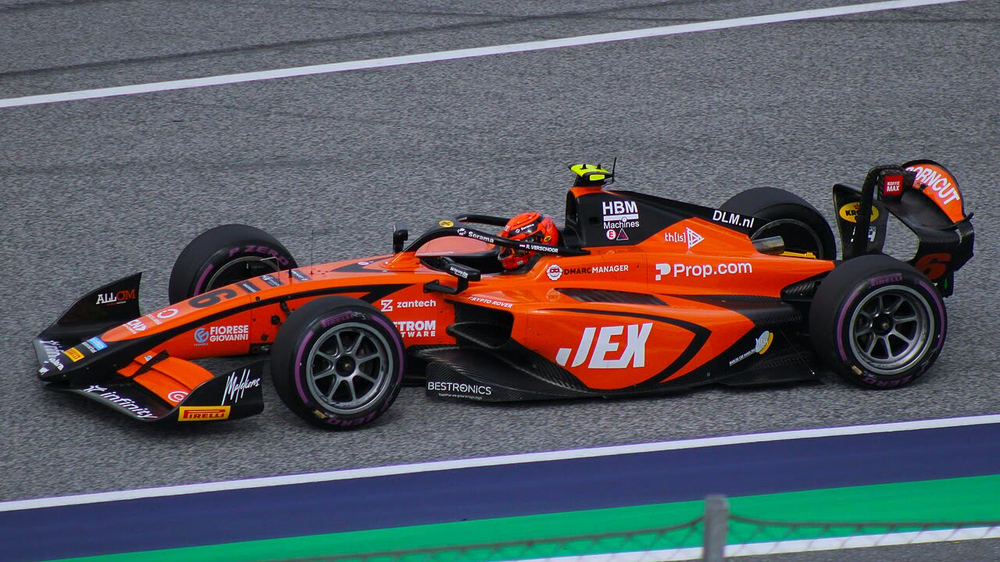

Dunne vence em Baku e entra na briga

Alex Dunne dominou a corrida principal depois de uma bandeira vermelha na largada e chegou a 174 pontos. Tsolov saiu num acidente com vários carros.

Alex Dunne dominou a corrida principal depois de uma bandeira vermelha na largada e chegou a 174 pontos. Tsolov saiu num acidente com vários carros.